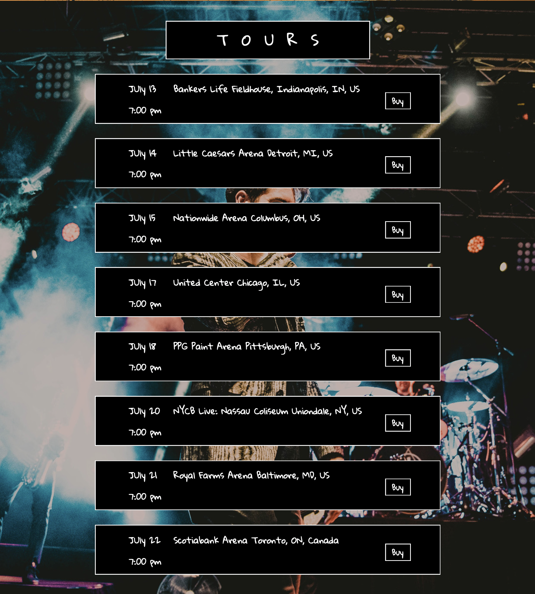
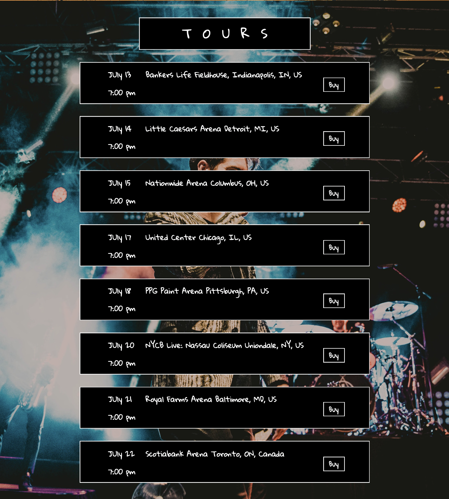
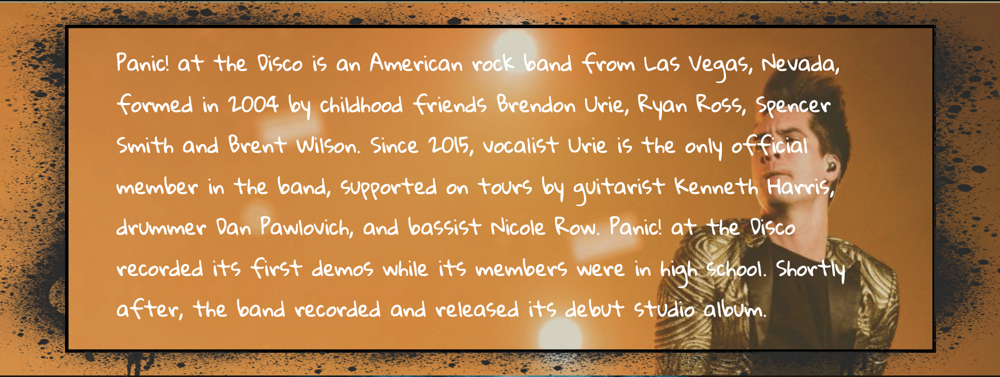
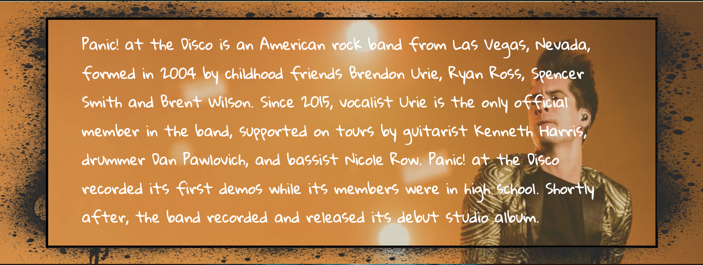

Panic! At The Disco
One of my first projects in web design was deisgning a website
about an artist that I like. I chose the “band” Panic! at The
Disco. Essentially, I created a one page mock up that has all of
the information on one page because who really wants to click
through multiple pages to find content that could fit on one.
 

 
